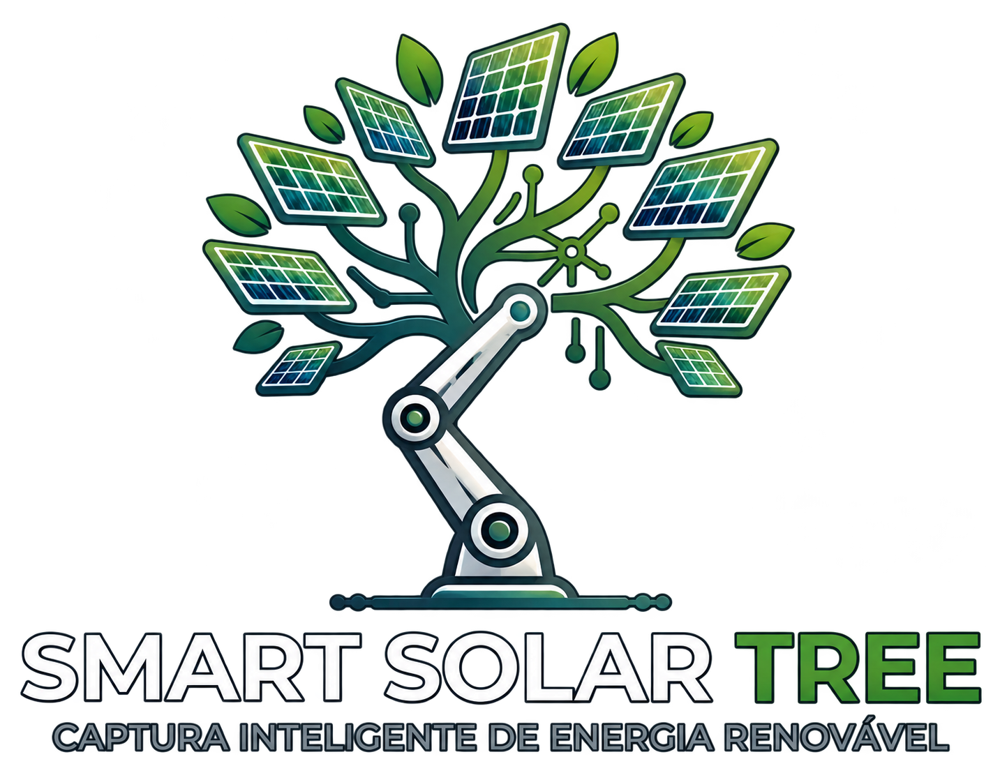

01
Simulação digital
Testamos cenários e comportamentos em ambiente virtual antes da implementação física, acelerando a experimentação e reduzindo custos de desenvolvimento.
EXPLORAR POSSIBILIDADES ↗
Uma solução desenvolvida para explorar novas formas de aumentar o aproveitamento da energia solar, combinando percepção do ambiente, movimentação inteligente e tomada de decisão orientada por dados.

A incidência solar varia durante o dia, enquanto grande parte dos painéis permanece em uma posição fixa.
Sistemas capazes de acompanhar essas mudanças podem aumentar a captação de energia, mas qualquer movimentação também possui custos e precisa ser utilizada de maneira eficiente.
É nesse equilíbrio que nasce a Smart Solar Tree.
Condições ambientais e movimentação influenciam o resultado.
A Smart Solar Tree é uma plataforma experimental que combina robótica, sensoriamento e inteligência artificial para investigar como sistemas solares podem reagir de maneira mais eficiente às condições do ambiente.
O objetivo não é simplesmente movimentar um painel continuamente, mas estudar quando uma mudança de posição pode realmente contribuir para um melhor aproveitamento energético.
Testamos cenários e comportamentos em ambiente virtual antes da implementação física, acelerando a experimentação e reduzindo custos de desenvolvimento.
O protótipo percebe mudanças no ambiente e possui mecanismos capazes de ajustar a orientação do sistema automaticamente.
Modelos computacionais analisam informações do sistema para apoiar decisões voltadas ao aproveitamento energético.
Perceber o ambiente. Entender o momento. Agir com propósito.
O sistema coleta informações sobre o ambiente.
Os dados são processados para compreender as condições atuais.
O sistema avalia a melhor estratégia naquele momento.
A estrutura pode adaptar sua orientação quando necessário.
Não foi possível carregar o vídeo. Tente abrir o arquivo diretamente.
Conheça a visão, o desenvolvimento e os próximos passos da Smart Solar Tree.
O projeto está sendo desenvolvido progressivamente, conectando ambiente virtual, prototipagem física e inteligência artificial.
Cada etapa permite validar hipóteses antes de avançarmos para testes de maior escala.
A Smart Solar Tree investiga uma nova abordagem para sistemas fotovoltaicos inteligentes, buscando combinar geração de energia, automação e tomada de decisão para aplicações futuras em ambientes urbanos.
Da pesquisa acadêmica à inovação sustentável.
O Smart Solar Tree é um projeto de inovação tecnológica idealizado por Heitor Exposito de Sousa, desenvolvido a partir da colaboração de uma equipe multidisciplinar que reúne conhecimentos em inteligência artificial, engenharia da computação, desenvolvimento de software, gestão estratégica e transformação digital.
Nascido no ambiente acadêmico, o projeto busca explorar novas possibilidades para a geração inteligente de energia solar, combinando automação, análise de dados e tecnologias capazes de contribuir para maior eficiência energética.
Mais do que uma iniciativa universitária, o Smart Solar Tree representa nossa visão de transformar conhecimento em soluções com potencial de aplicação real, aproximando pesquisa, sustentabilidade e oportunidades de mercado.
Uma ideia deu origem ao projeto. Diferentes talentos estão ajudando a transformá-la em realidade.

Idealizador do Smart Solar Tree | Inteligência Artificial e Inovação
Idealizador do Smart Solar Tree e estudante de Inteligência Artificial na FIAP, com conhecimentos em machine learning, inteligência artificial generativa e análise de dados. Possui formação complementar em tecnologias de IA e experiência na disseminação de conhecimentos sobre inteligência artificial em ambiente corporativo. Sua visão deu origem ao projeto, propondo a integração entre inteligência artificial, automação e energia solar para explorar novas possibilidades de eficiência energética.
LinkedIn
Engenharia da Computação, Dados e Prototipagem
Estudante de Engenharia da Computação na FIAP, com experiência em análise de dados no Itaú Unibanco e atividades em laboratório de prototipagem. Sua trajetória reúne conhecimentos em programação, desenvolvimento e experimentação tecnológica, trazendo ao Smart Solar Tree competências relevantes para a integração entre hardware, software e análise de informações.
LinkedIn
Estratégia, Transformação Digital e Inovação
Profissional com mestrado em Administração de Empresas pela FGV e sólida experiência em inovação, estratégia, gestão de projetos e produtos, governança de TI e transformação digital. Sua trajetória na gestão de soluções e inovação agrega ao Smart Solar Tree uma visão voltada à estruturação de tecnologias inteligentes, à articulação de conhecimentos multidisciplinares e à aplicação prática da inovação em desafios reais.
LinkedIn
Gestão Estratégica, Eficiência e Automação
Profissional com experiência em gestão estratégica, melhoria de processos e análise de indicadores, com certificação Green Belt. Sua trajetória combina visão de negócios, eficiência operacional e aplicação de tecnologias como inteligência artificial e automação. Agrega ao Smart Solar Tree competências relevantes para avaliar a viabilidade, a eficiência e o potencial de aplicação comercial da solução.
LinkedIn
Engenharia de Software e Arquitetura Tecnológica
Engenheiro de software com experiência no desenvolvimento de soluções escaláveis e orientadas a dados. Sua trajetória reúne competências em arquitetura de sistemas, desenvolvimento e integração de tecnologias. Esses conhecimentos fortalecem a base técnica necessária para a evolução de soluções digitais inteligentes e para a integração entre diferentes componentes tecnológicos do Smart Solar Tree.
LinkedIn
Inteligência Artificial e Visão Computacional
Doutor em Ciência da Computação pela UFMG, com estágio de pesquisa na Itália e pós-doutorado pelo Laboratório Nacional de Computação Científica (LNCC). Professor da FIAP e pesquisador-colaborador da UFABC, possui ampla experiência em Inteligência Artificial, Visão Computacional e Processamento de Imagens. Com sólida trajetória acadêmica, orientou dezenas de pesquisadores e coordenou projetos apoiados por instituições como FAPESP, CNPq e CAPES, contribuindo para o avanço da pesquisa e da inovação tecnológica.
Currículo LattesA Smart Solar Tree está em desenvolvimento e estamos abertos a conversar com empresas, instituições e pessoas interessadas em acompanhar, apoiar ou explorar futuras aplicações da tecnologia.
TENHO INTERESSE